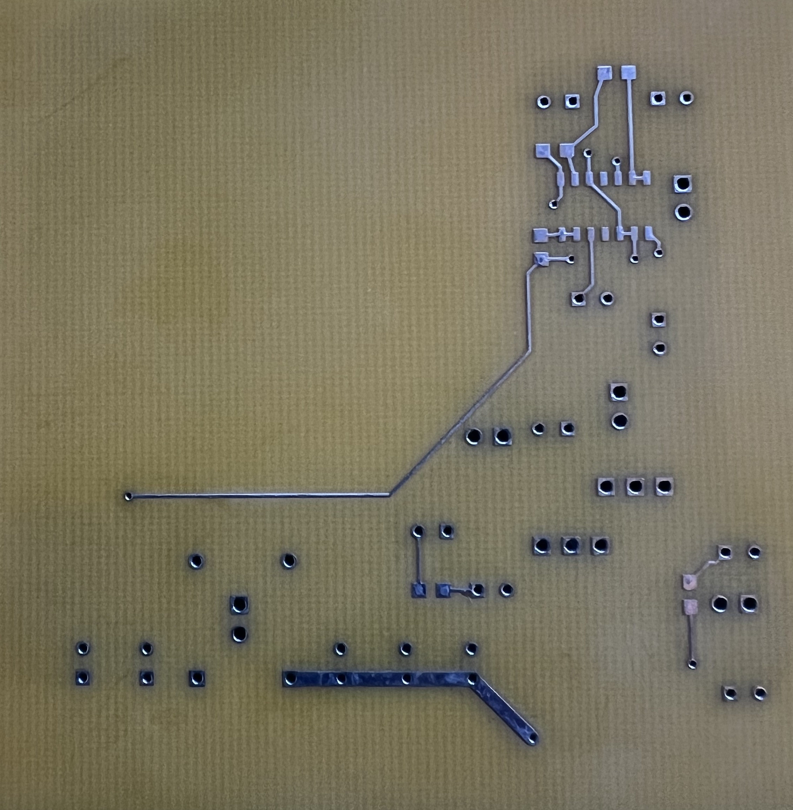
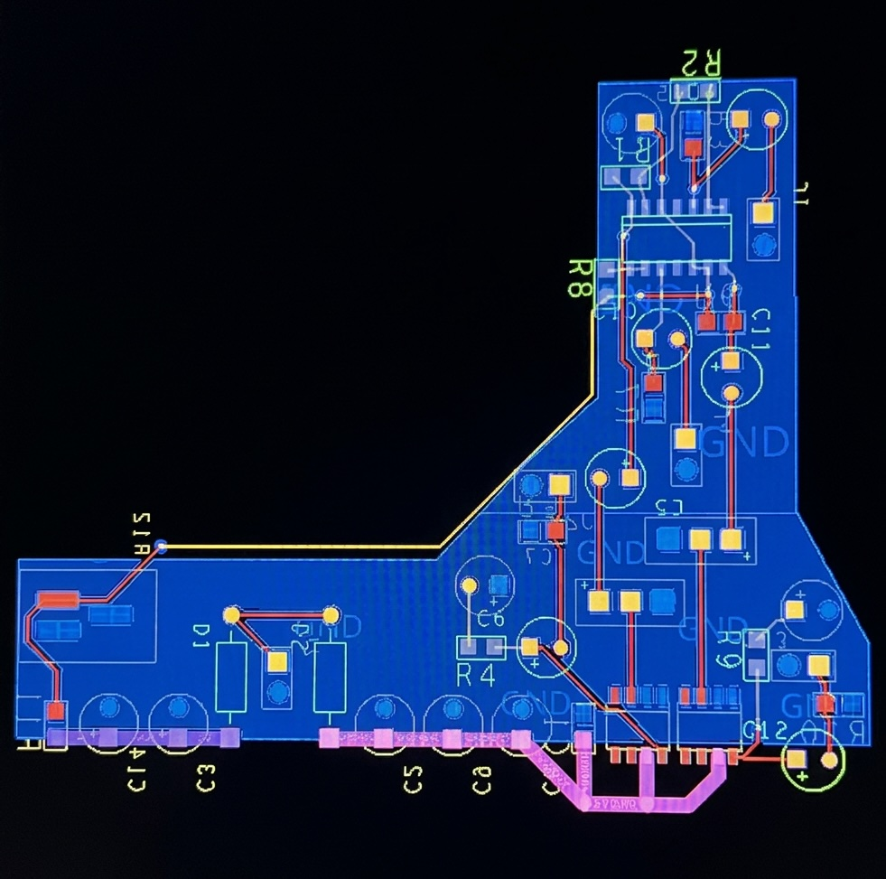

Class-AB Audio Amplifier
A class-AB audio amplifier taken from a reference schematic through OrCAD capture, Allegro layout, and fabrication.

Overview
This board recreates a single-supply, AC-coupled class-AB linear audio power amplifier from a reference schematic, taken from a blank OrCAD project through to a manufactured board. I set up the OrCAD directory structure and layer views from scratch, built the schematic in OrCAD Capture — including a custom three-pin jumper symbol — and laid it out in Cadence Allegro with a matching custom jumper footprint. After clearing all DRC errors, I generated manufacturable Gerber files and sent the design to Advanced PCB for fabrication. This is where padstacks, vias, footprints, ground planes, and the rest of the PCB design flow actually clicked.
Decoupling capacitors were placed as close to each IC as possible to keep the bypass loop tight, and power traces were routed wider than the signal traces to handle the higher current with less resistive drop and heating.


The layout was checked against Advanced PCB's fabrication constraints before sending it out — for a standard two-layer, 1 oz copper board, their published rules call for roughly 5–5.5 mil trace width and spacing, a minimum drilled via size around 6 mil, and about 10 mil of copper clearance to the board edge. [Confirm these match what you actually set in Allegro's constraint manager, or swap in your real numbers if different.] All DRC errors were cleared before generating Gerbers.
This was the first PCB I had complete freedom to design, and I'll be honest — the layout wasn't my best work, which is part of why I didn't think it was worth assembling. A lot of it only clicked once I could hold the finished board: vias, trace routing, ground planes, and part placement all made far more sense in hindsight than they did while I was laying it out. It was designed, laid out, and manufactured, but never assembled or tested, and the original OrCAD and Allegro project files were lost — only the photos and screenshot above remain.
Next: the real payoff here is what it taught me about the full flow — schematic, DRC setup, layout, manufacturing, assembly. Placement decisions make more sense now too: keeping connectors on the perimeter, using board space more efficiently, giving vias enough spacing, and choosing trace widths deliberately instead of by default. Those lessons are already shaping how I approach the other boards on this site.